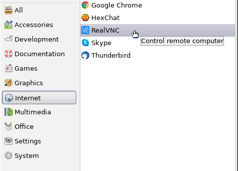
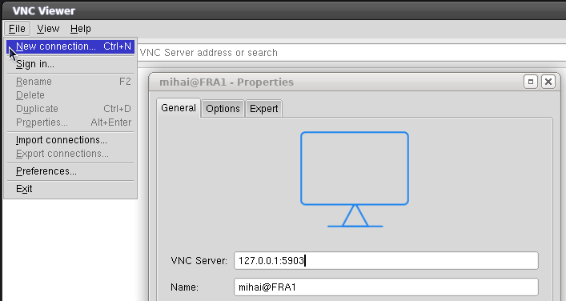

Read about installing tigervnc-server on CentOS7.
yum install tigervnc-server xorg-x11-fonts-Type1
Copy the VNC Server config file.
Use port :3 which is 5903 instead of :0 or 5900
cp /lib/systemd/system/vncserver@.service /etc/systemd/system/vncserver@:3.service
Replace <USER> with the user name in the service file.
cat /etc/systemd/system/vncserver@:3.service
[Unit] Description=Remote desktop service (VNC) After=syslog.target network.target [Service] Type=forking # Clean any existing files in /tmp/.X11-unix environment ExecStartPre=/bin/sh -c '/usr/bin/vncserver -kill %i > /dev/null 2>&1 || :' ExecStart=/usr/sbin/runuser -l mihai -c "/usr/bin/vncserver %i" PIDFile=/home/mihai/.vnc/%H%i.pid ExecStop=/bin/sh -c '/usr/bin/vncserver -kill %i > /dev/null 2>&1 || :' [Install] WantedBy=multi-user.target
VNC connection is not encrypted. We must use a ssh tunnel.
Open both ports ssh 22 and vnc 5903
iptables -A INPUT -p tcp --dport 22 -j ACCEPT iptables -A INPUT -p tcp --dport 5903 -j ACCEPT
If you do this on a headless server then install X11, XFCE and lightdm as on
CentOS-8.
You have to start XFCE once for the <USER> to create the default desktop.
Set the VNC password for the user.
[mihai@centos: ~]$ vncserver You will require a password to access your desktops. Password: Verify: Would you like to enter a view-only password (y/n)? n A view-only password is not used New 'centos:1 (mihai)' desktop is centos:1 Creating default startup script /home/mihai/.vnc/xstartup Creating default config /home/mihai/.vnc/config Starting applications specified in /home/mihai/.vnc/xstartup Log file is /home/mihai/.vnc/centos:1.log [mihai@centos: ~]$
By default VNC server will start GNOME Desktop session.
Read
here how to switch to XFCE session.
mv ~/.vnc/xstartup ~/.vnc/xstartup.bak cat > ~/.vnc/xstartup << EOF #!/bin/bash xrdb $HOME/.Xresources startxfce4 & EOF
Grant executable privilages
chmod +x ~/.vnc/xstartup
Enable the VNC service.
systemctl daemon-reload systemctl start vncserver@:3.service systemctl enable vncserver@:3.service
It may be needed to reboot the server once.
Download the VNC viewer for Linux from realvnc website and install it to /opt
su mkdir -pv /opt/vnc-viewer mv VNC-Viewer-*-Linux-x64 /opt/vnc-viewer/ cp -v /home/mihai/Code/git-main/script/realvnc/vnc-viewer.png /opt/vnc-viewer chown -Rv root:root /opt/vnc-viewer chcon -Rv -u system_u -t usr_t /opt/vnc-viewer
cat > /usr/share/applications/realvnc.desktop << EOF [Desktop Entry] Name=RealVNC GenericName=VNC Viewer Comment=Control remote computer Exec=/opt/vnc-viewer/VNC-Viewer-6.19.1115-Linux-x64 Terminal=false Icon=/opt/vnc-viewer/vnc-viewer.png Type=Application Categories=Network; Version=1.0 X-Desktop-File-Install-Version=0.23 EOF
Create the ssh tunnel
ssh -L 5903:$DIGITALOCEAN:5903 -l mihai $DIGITALOCEAN
or connect using a private key
ssh -L 5903:$DIGITALOCEAN:5903 -i ~/.ssh/id_rsa_digitalocean -l mihai $DIGITALOCEAN
Start RealVNC
Add a new connection

To connect from a Windows client read
here
about How to Tunnel VNC over SSH.
You will need
PuTTY and
RealVNC for this.